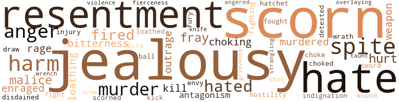
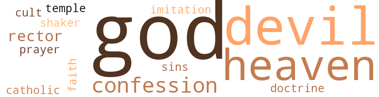

Haunting Hand (The), by Roberts, Walter A. (1926)
21 music-related terms matched in this text.
Most frequent terms in this topic: danced (4); instrument (3); rap (2); phrases (2); upright (1)
dance.v.03
Definition: skip, leap, or move up and down or sideways
| word | sentence |
|---|---|
| danced | It rolled and danced its way along , keeping close to the ground . |
| danced | As Margot danced , with one man and then an - other , a rapt , detached , impersonal joy , shone in her face . |
| danced | Gone the sense in her of repugnance for Stoner , even when she danced in his arms . |
| danced | I danced with you more than with any other man , and I talked with you a lot . " |
exposition.n.04
Definition: (music) the section of a movement (especially in sonata form) where the major musical themes first occur
| word | sentence |
|---|---|
| exposition | He 'd been so darn skeptical , that when finally I got him on the run in my exposition of events , and he was eating right out of my hand , I could n't resist the temptation to see how far I could go . |
music.n.01
Definition: an artistic form of auditory communication incorporating instrumental or vocal tones in a structured and continuous manner
| word | sentence |
|---|---|
| music | What if the music were secondhand ? |
musical_instrument.n.01
Definition: any of various devices or contrivances that can be used to produce musical tones or sounds
| word | sentence |
|---|---|
| instrument | She ran to the instrument , brushing by Gene 's out - stretched arms , and took up the receiver . |
| instrument | Her hand trembling so that she very nearly dropped the instrument , she lifted the telephone from the table to the bed . |
| instrument | How did she know where Gene had the instrument ! |
phrase.n.02
Definition: a short musical passage
| word | sentence |
|---|---|
| phrases | These are the phrases that I do n't understand : " Il y a un homme au-dessous de mon lit . |
| phrases | Surely you know what those phrases mean . " |
| phrase | " Just one more phrase I ca n't understand . |
preamble.n.01
Definition: a preliminary introduction to a statute or constitution (usually explaining its purpose)
| word | sentence |
|---|---|
| preamble | Without preamble Corinne went to the point . |
rap.n.05
Definition: genre of African-American music of the 1980s and 1990s in which rhyming lyrics are chanted to a musical accompaniment; several forms of rap have emerged
| word | sentence |
|---|---|
| rap | She got up and moved to the door , still speaking : " You see , the object of Stella 's return to that room is what I want She was interrupted by a sharp rap on the door . |
| rap | " If you wo n't muss me , and wo n't get too rap - turous , I 'll let you kiss me - once - just to give you a good start for the evening . " |
rhythm.n.04
Definition: the arrangement of spoken words alternating stressed and unstressed elements
| word | sentence |
|---|---|
| rhythm | Caught up in the rhythm of jazz , what mattered anything but motion - to these children of the Twentieth Cen - tury - the poetry of motion , the only poetry most of them would ever give a brass farthing for . |
tapdance.v.01
Definition: dance and make rhythmic clicking sounds by means of metal plates nailed to the sole of the dance shoes
| word | sentence |
|---|---|
| tapping | You 'd told how you saw the hand , so when the calcium light flashed again - pleasant little prac - tical joke , by the way - it stands to reason , does n't it , that Boyle imagined the same thing you saw , even to tapping out the light . " |
| tap | " Briefly , as I see it , Margot , the light you saw was a match , and Boyle , with his superstitious fears , might have seen anything , and you do n't actually know that there were any lights at any time , for Murchison to tap out . |
tune.n.01
Definition: a succession of notes forming a distinctive sequence
| word | sentence |
|---|---|
| lines | If I were as sure of Stoner himself as I am of my limited knowledge along such lines , I 'd be inclined to accept his theory , at least to prove or disprove it , with an open mind . " |
| line | Her mouth drew into a straight line , and she took a few nervous puffs at her cigarette . |
upright.n.02
Definition: a piano with a vertical sounding board
| word | sentence |
|---|---|
| upright | Faint creaking of the door pushing inward ; a figure , indistinct , crouching uncertainly ; then upright , stepping more boldly into the room , and moving slowly toward them . |
140 violence-related terms matched in this text.
Most frequent terms in this topic: jealousy (10); scorn (9); spite (9); hate (9); resentment (9)
abhor.v.01
Definition: find repugnant
| word | sentence |
|---|---|
| loathed | She loathed him for his implication of favor - itism at a price . |
abhorrence.n.01
Definition: hate coupled with disgust
| word | sentence |
|---|---|
| loathing | He reached again into the hole , probed eagerly , then gave a sudden cry of surprise and loathing . |
| loathing | And no one stirred or removed his gaze of stunned surprise and fasci - nated loathing from the severed arm , with its hand clenched and disfigured by so unsightly a scar . |
affray.n.02
Definition: a noisy fight
| word | sentence |
|---|---|
| fray | A hot tub , a cold shower , setting-up exercises , and a moderate disposal of rouge and powder over her clear skin , and she was ready for the fray . |
| fray | Instinctively she always half expected it to be some sort of a fray with Stoner as director and would-be lover . |
| fray | Then Stella took a hand in the fray . |
anger.n.01
Definition: a strong emotion; a feeling that is oriented toward some real or supposed grievance
| word | sentence |
|---|---|
| anger | She repeated laughingly his warnings about Corinne Delamar , but she omitted his avowals of devotion , and his anger because she had refused to dine with him that night . |
| anger | A flash of anger quickened the tired lifelessness of Stella 's blue eyes . |
| anger | His anger was evidently not far beneath the surface . |
| anger | This last offer of selfish patronage of her career was more bald than previous offers or hints had been , but why let it anger her , she wisely con - cluded , giving a non-committal smile . |
| anger | Margot 's face flamed with an intensity of anger she had not supposed herself capable of . |
| anger | Corinne 's red lips trembled and her eyes darkened with anger . |
| anger | There was no mistaking that look of fear , followed swiftly by a gleam of anger . |
anger.v.02
Definition: become angry
| word | sentence |
|---|---|
| angered | His smile was meant to be soothing , but it angered her . |
contemn.v.01
Definition: look down on with disdain
| word | sentence |
|---|---|
| scorn | Margot gave a low chuckle as she heard the disgust and scorn in Quinlan 's voice . |
| scorned | Quinlan 's reply was a grunt that scorned fur - ther argument . |
| scorn | The girl 's sweeping scorn of Quin - lan , was comic . |
| scorn | It was Quinlan 's turn to retaliate with a scorn as scathing as her own . |
| scorn | His smile expressed the scorn he shared with her as regards the plainclothes man . |
| disdained | Gene disdained to attempt the sort of repartee which Stoner could have understood . |
| scorns | He scorns the case . |
| scorn | Hart 's scorn became more obvious , but he sent one of his men to borrow the implement at a nearby hardware shop . |
| scorn | Black-browed and fierce , her glance swept over the faces of the men , then rested on Margot 's with defiant scorn . |
| scorn | Stella threw Hart a glance of amused scorn . |
| scorn | The slight scorn so often shown by rather ignorant men for intelligent women . |
| scorn | Corinne 's scorn lay too deep for humor or irony . |
draw.v.23
Definition: pull (a person) apart with four horses tied to his extremities, so as to execute him
| word | sentence |
|---|---|
| draw | " Well , " said Margot slowly , " I 'm not sure of anything , and it 's too soon to draw any definite conclusions about Stoner or anything else , but I do feel that in some way that I ca n't fathom , Stoner has a personal reason for wanting me to drop the investigation of my little mystery . " |
| drew | Suddenly a smile drew up the corners of her mouth , and she put soft fingers against his lips . |
enrage.v.01
Definition: put into a rage; make violently angry
| word | sentence |
|---|---|
| enraged | She dreamed ( and awoke from the dream , trembling and long - ing to cry out , as one feels on awaking from a nightmare ) of Stoner ; not Stoner attempting to force his coarse passion upon her ; not Stoner enraged at her for disobeying his orders to drop all probing into the mystery of her room ; but Stoner , looking at her as he had looked that first day when she had given him her address , looking at her with pupils dilated , the overtone as of a yellowish shadow darkening his pale blue eyes ; the shimmer in the eyeball like dust-specks in a sunbeam ! |
| enraged | His language , though inelegant , made Margot smile in his face , which enraged him still further . |
envy.n.01
Definition: a feeling of grudging admiration and desire to have something that is possessed by another
| word | sentence |
|---|---|
| envy | There was faint envy in Lulu 's big blue eyes . |
ferocity.n.01
Definition: the property of being wild or turbulent
| word | sentence |
|---|---|
| fierceness | Stoner spoke with sudden fierceness . |
fight.n.05
Definition: a boxing or wrestling match
| word | sentence |
|---|---|
| fight | Then she asked Stella if that was positively all she could remember and to tell them of the events leading up to and following the dramatic incident of the fight over the radium . |
fight.v.02
Definition: fight against or resist strongly
| word | sentence |
|---|---|
| fought | With all her rage and strength she fought him . |
| fighting | Little did Hart suspect that Margot was actually , at that moment , fighting the temptation to let precisely that element creep into her emo - tions if not into her reflections . |
fury.n.01
Definition: a feeling of intense anger
| word | sentence |
|---|---|
| rage | With all her rage and strength she fought him . |
| fury | She described Stoner 's attack upon her , his love-making , and his cold fury when she struck him across the mouth . |
| rage | Surprise changed to insensate rage as he stared back at his star . |
gag.v.06
Definition: cause to retch or choke
| word | sentence |
|---|---|
| choked | He spoke in a choked undertone . |
| choke | But as to this publicity stunt , we 've got to choke it off , and I depend on you , Corinne , to do what you can with her . |
| choking | A sound that suggested that someone in the room was choking , brought Hart 's head around with a jerk to where his men were standing , at rigid attention . |
| choking | Again her heart seemed to be in her throat , choking her . |
grudge.n.01
Definition: a resentment strong enough to justify retaliation
| word | sentence |
|---|---|
| grievance | A maniac - an escaped maniac , a paranoiac , who had picked her out as the one on whom to avenge an imagined grievance . |
harm.v.01
Definition: cause or do harm to
| word | sentence |
|---|---|
| harm | It 's going to do you and all of us harm if you persist in being connected with it . |
| harm | Perhaps it would be a waste of time , and do me harm . |
hate.v.01
Definition: dislike intensely; feel antipathy or aversion towards
| word | sentence |
|---|---|
| hated | He hated the thought that Gene and not himself had been associated with her in an adven - ture . |
| hated | He hated still more the idea of this asso - ciation becoming public news . |
| hate | " But I do n't like Stoner and I hate to see him hanging around you . " |
| hate | " All the same I hate to see his familiar manner with you . |
| hate | " Well , I 'd hate to have you overwork your imagination , so I 'll help you out . |
| detested | Margot detested flattery , but she caught the implication in Corinne 's question - unexpectedly clever of Corinne ! |
| hate | But if you say you 've just kind of wandered in by mistake , and if you 'll agree to sort of leave my - my yard alone , why I guess I wo n't hate you . " |
| hated | She hated rows . |
| hated | She hated having people dislike her or suspect her of mean motives . |
| hate | And in the evenings he stuck in his rooms like a hermit , and he seemed to hate women . " |
| hated | I thought you hated them , and of all things to-night , when you 've got so much on your mind . " |
| hate | But she whispered , with a low laugh , that if exploding would relieve his feelings , she 'd hate to stand in his way . |
| hate | I hate fat men . " |
| hates | I 'm quite sure that no man is ever as good as the woman who loves him believes him to be , and never as bad as the woman who hates him considers him to be . |
| hate | It was Corinne 's irrepressible but final disposal of the man for whom her love had turned to hate . |
| hate | I hate talking standing up . " |
hostility.n.01
Definition: a hostile (very unfriendly) disposition
| word | sentence |
|---|---|
| hostility | First he had warned her against the harm of freakish notoriety , then he had switched to the possibility of arousing the star 's hostility . |
hostility.n.02
Definition: a state of deep-seated ill-will
| word | sentence |
|---|---|
| antagonism | Instinctively he seemed to feel their alignment , and antagonism to him . |
| antagonism | Margot had treated Corinne with con - sistent and amiable courtesy , but had made no attempt to overcome her antagonism , by catering to her up-stage exactions . |
indignation.n.01
Definition: a feeling of righteous anger
| word | sentence |
|---|---|
| indignation | The im - pertinence of Corinne Delamar 's imperative dis - patch , created an irritation which was close to angry indignation by the time she entered the big edifice . |
| outrage | " Speaking of ' hoakum , ' may I be permitted , my dear girl , to outrage your feelings by apply - ing just that word to most of your eloquence on the subject of ' ignis fatuus ' - ' corpse candle ' - ' will-o ' - the-wisp ' - whatever it 's called ? " |
| outrage | " You 'd outrage my intelligence - and your own - if you did n't regard my eloquence on the sub - ject in just that light . |
injury.n.01
Definition: any physical damage to the body caused by violence or accident or fracture etc.
| word | sentence |
|---|---|
| harm | First he had warned her against the harm of freakish notoriety , then he had switched to the possibility of arousing the star 's hostility . |
| harm | " I 've been thinking that it might n't do any harm to make a cautious investigation of your spook . |
| injury | Hart assured Margot that although theft was probably the motive for the midnight visita - tion - granted that there had been any such ap - pearance as she had described - he was sure that criminal intent to do bodily injury was not in - volved , and as to anything of a supernatural nature , that was of course ridiculous . |
| harm | The harm 's done . |
| harm | It would do no harm to show him the room , in any case . |
| harm | " We wo n't do anything about it - I mean we wo n't do you any harm if you 'll tell us what you know . |
| hurt | The suspicion had come to her , that he was angry and hurt , far more seriously than she had imagined possible - that is , assuming that he was sincere in his protests of love for her . |
| harm | " Sure , I meant no harm , Miss . |
jealousy.n.01
Definition: a feeling of jealous envy (especially of a rival)
| word | sentence |
|---|---|
| jealousy | The simple truth , so she felt , was that Stoner was indulging unreasoning and petty jealousy of Gene . |
| jealousy | It would be unwise to give Gene any additional reason for suspicion and jealousy of Stoner . |
| jealousy | I 'm not going to cut off my nose to spite my face just out of jealousy , but I 'll do it in a jiffy if there 's real foundation for that jealousy . " |
| jealousy | I 'm not going to cut off my nose to spite my face just out of jealousy , but I 'll do it in a jiffy if there 's real foundation for that jealousy . " |
| jealousy | She shrank from acknowledging to herself that she felt jealousy of Lulu Leinster , for jealousy is an admission of inferiority . |
| jealousy | She shrank from acknowledging to herself that she felt jealousy of Lulu Leinster , for jealousy is an admission of inferiority . |
| jealousy | Gene drew her closer with a sudden access of possessive jealousy . |
| jealousy | Men often did contemptible things out of jealousy . |
| jealousy | Speaking of jealousy ! |
| jealousy | Silly of her to advertise her jealousy of Margot ! |
kick_back.v.02
Definition: spring back, as from a forceful thrust
| word | sentence |
|---|---|
| kick | He was so suave I wanted to kick him . |
kill.v.10
Definition: cause the death of, without intention
| word | sentence |
|---|---|
| kill | I 'm tired out anyway , and poor Quin - lan 's half hour has stretched out till I dare say he 's ready to kill me . |
| kill | At long range , they are harmless to human tissues , but if the contact is close , they scorch and kill . |
knife.n.02
Definition: a weapon with a handle and blade with a sharp point
| word | sentence |
|---|---|
| knife | She had seen the evil little things burn holes in tables , and the edges of mantels , and she had ruined the handle of a good knife with the careless dropping of a lighted match . |
malice.n.01
Definition: feeling a need to see others suffer
| word | sentence |
|---|---|
| malice | Corinne 's pretty lips twisted in a smile of malice and irony . |
| spite | He was no match for the girl , Margot thought , amused in spite of all that the scene evoked and might well signify . |
| spite | In spite of three successive sleepless nights , much excitement and considerable nerve strain , youth had refreshed itself from unguessed sources . |
| spite | " You 're not such a fool as to threaten to quit work on this picture in the middle of it , just out of jealous spite over another woman ? " |
| spite | I 'm not going to cut off my nose to spite my face just out of jealousy , but I 'll do it in a jiffy if there 's real foundation for that jealousy . " |
| spite | You would be written up , in spite of what I told you ! " |
| spite | But he already had the reputation of being a clever camera man , and he 'd make another good connection in spite of Stoner . |
| spite | In spite of the makeup on cheeks and lips , Corinne had turned very white . |
| malice | There was something in his smile that suggested malice . |
| malice | His remarks about Gene had obviously been inspired by jealous malice , and she was inclined to agree with Corinne that he had lied , although it seemed like rather a silly and superfluous lie . |
| spite | I believe Stoner sprung that stuff about her going out to the coast , just to spite you , because you 'd cornered him . |
| spite | Margot 's clever brain could function , in spite of her fear . |
murder.n.01
Definition: unlawful premeditated killing of a human being by a human being
| word | sentence |
|---|---|
| murder | They come to get some - thing - that 's what they come for - or maybe , " he bent a threatening scowl upon her , " maybe they come to murder somebody . " |
| murders | Too many murders of young actresses and dancers in that neighborhood . |
| murder | You could literally get away with murder , and not a soul be the wiser . " |
| murder | You 'd already stirred them up thoroughly with your story of mystery and murder . " |
| murder | " My story did n't include a murder . " |
| murder | Gene 's voice , dull and clouded writh sleep , saying " Hello ! " as if he 'd like to murder somebody if he were not too sleepy to take the trouble . |
murder.v.01
Definition: kill intentionally and with premeditation
| word | sentence |
|---|---|
| murdered | Somebody run over or murdered . |
| murdered | Nothing happened , but I fully ex - pected to be murdered any minute . |
musket_ball.n.01
Definition: a solid projectile that is shot by a musket
| word | sentence |
|---|---|
| ball | If she did n't coquette a little with Stoner , just to keep the ball rolling , either she 'd antagonize him , or run the risk of bringing on a crisis by goading him to a less oblique attack . |
open_fire.v.01
Definition: start firing a weapon
| word | sentence |
|---|---|
| fired | She 's likely to tell you you 're fired . " |
| fired | Consider yourself fired from the Superfilm Company . |
| fired | It was a shame of course , that she was the cause of Gene being fired , for Stoner would undoubtedly put as many spokes in Gene 's wheel as possible . |
| fired | " See here , Gene , if he had n't fired you I 'd not dream of telling you just what happened last night . |
overlie.v.02
Definition: kill by lying on
| word | sentence |
|---|---|
| overlaying | She stopped , watching him with amusement overlaying her serious intent to corner him . |
pain.v.02
Definition: cause emotional anguish or make miserable
| word | sentence |
|---|---|
| hurt | A man of Stoner 's type could n't possibly hurt me in any - way , for I 'd never want him as a friend , let alone as a lover . |
| hurt | She laughed , then sobered quickly as Gene drew back , hurt by her levity . |
resentment.n.01
Definition: a feeling of deep and bitter anger and ill-will
| word | sentence |
|---|---|
| resentment | Her smile accepted his skepticism without the resentment she had felt a few hours before . |
| resentment | She was in no mood to do her - self credit , and she was glad that Stoner 's petty resentment had given her such a good chance to rest and wait . |
| resentment | Quick resentment flamed into Margot 's gray eyes , but she controlled herself to say gently : " Will you tell me what right you have , Miss Delamar , to assume that I 'm ' playing ' - as you call it - the director , from any motive whatsoever ? " |
| resentment | It was what she might have expected , but she felt the same unreasoning resentment which all skepticism regarding her experience seemed to evoke . |
| resentment | She smiled at Gene 's quickly aroused suspicion and resentment . |
| bitterness | Her face hardened again , her lips grew tight with a bitterness in tragic contrast to the youth of her face , as she looked at the lurid scar which had riveted Mar - got 's attention . |
| resentment | Puzzlement changed quickly to resentment . |
| bitterness | " No , " he said , with slow bitterness . |
| resentment | Of course Gene would get over his extraordinary burst of angry resentment , and , of course , when he understood just what she had meant by saying that he could give her a brotherly kiss for the last time , he would be sorry he had been so fierce . |
| resentment | For a second , Margot felt angry resentment at what , on the lips of such a man as Stoner , might so easily contain an ugly meaning - a raw suggestion . |
| resentment | For the first time Margot felt angry resentment . |
shoot.v.02
Definition: kill by firing a missile
| word | sentence |
|---|---|
| shot | In the midst of the confusion , here and there , were completed sets where scenes were being shot ; rooms furnished to the last detail , with only one or two walls apiece , rooms where actors strolled and mimed , and upon which blazed the batteries of assembled Kleig lights . |
sting.n.03
Definition: a painful wound caused by the thrust of an insect's stinger into skin
| word | sentence |
|---|---|
| bite | Of course we 'll have to have a bite to eat . |
strangle.v.01
Definition: kill by squeezing the throat of so as to cut off the air
| word | sentence |
|---|---|
| strangling | Stricken with terror , her heart first missing a beat , then seeming to be in her throat , strangling her , Margot watched the hand reach to the match and tap it softly with thin fingers , crushing the burning end . |
sword.n.01
Definition: a cutting or thrusting weapon that has a long metal blade and a hilt with a hand guard
| word | sentence |
|---|---|
| sword | She decided hastily to make conversa - tion of a kind that would entertain the crowd , and avoid personalities , and danger of sword crossing between Gene and Stoner . |
tomahawk.n.01
Definition: weapon consisting of a fighting ax; used by North American Indians
| word | sentence |
|---|---|
| hatchet | He was round-shouldered , and had a thin , ugly , hatchet sort of face . |
twit.n.02
Definition: aggravation by deriding or mocking or criticizing
| word | sentence |
|---|---|
| taunt | The smile she gave him , although conveying a mocking taunt , was not unfriendly . |
violence.n.01
Definition: an act of aggression (as one against a person who resists)
| word | sentence |
|---|---|
| violence | Gene 's unex - pected violence was rather startling . |
weapon.n.01
Definition: any instrument or instrumentality used in fighting or hunting
| word | sentence |
|---|---|
| weapons | The old saying about listeners , might well apply in this case , but Margot felt that in all the circumstances - and the fact that she felt an instinctive mistrust of Stoner - she was justified in using whatever self-defensive weapons chance might offer her . |
| weapon | My unseen weapon is to be Corinne Delamar . |
wound.n.01
Definition: an injury to living tissue (especially an injury involving a cut or break in the skin)
| word | sentence |
|---|---|
| wound | Margot 's gaping eyes saw the scar of a freshly healed wound . |
wrath.n.01
Definition: intense anger (usually on an epic scale)
| word | sentence |
|---|---|
| wrath | All but Stoner , who was in a con - dition of blasphemous wrath . |
wrench.n.01
Definition: a sharp strain on muscles or ligaments
| word | sentence |
|---|---|
| wrench | A violent wrench of nerves and muscles and will , then she raised a hand that was icy cold and stiff , and switched on the light on the night table . |
47 religion-related terms matched in this text.
Most frequent terms in this topic: God (12); devil (11); Heaven (6); confession (5); catholic (1)
catholic.n.01
Definition: a member of a Catholic church
| word | sentence |
|---|---|
| catholic | As catholic in her literary tastes as in her choice of friends , Margot 's books presented a varied diet ; fiction ranging from Kipling to Anatole France , poetry from Dante to Millay . |
confession.n.05
Definition: the document that spells out the belief system of a given church (especially the Reformation churches of the 16th century)
| word | sentence |
|---|---|
| confession | The moment of hos - tile silence was calculated to force confession , but she seemed unconscious of it . |
| confession | " I suppose you 're insinuating , Miss Anstru - ther , that you 've got enough on Fred Stoner to force his confession ? " |
| confession | And his confession to you in my presence , if you 'll be so kind as to send for him . |
| confession | But I suppose - and an honest confession is good for the soul - I suppose that I 'm so darn glad you put it all over Stoner , and opened my eyes for fair , regarding his conduct in general , that I felt there was n't anything too much I could find to do for you . |
| confession | She was afraid of what Gene might read in them , and she was n't quite ready for her own confession . |
cult.n.03
Definition: followers of an unorthodox, extremist, or false religion or sect who often live outside of conventional society under the direction of a charismatic leader
| word | sentence |
|---|---|
| cult | Eager to a point where it was diffi - cult to restrain her mad desire to find what lay under all that dust and wadding or whatever it was , nevertheless she felt a cold , shuddering dread of what they might discover . |
curate.n.01
Definition: a person authorized to conduct religious worship
| word | sentence |
|---|---|
| rector | Hours later , Margot , standing on the side lines , dressed as Conchita , felt no surprise that her di - rector had so manipulated matters during the bal - ance of the day , that her scene was not called . |
| rectors | Or you can face your board of di - rectors and deny my accusations , which will enable me to prove them to everyone 's satisfaction . |
doctrine.n.01
Definition: a belief (or system of beliefs) accepted as authoritative by some group or school
| word | sentence |
|---|---|
| doctrine | Margot knew that the movies have a doctrine of efficiency to which they seldom adhere . |
eden.n.01
Definition: any place of complete bliss and delight and peace
| word | sentence |
|---|---|
| Heaven | What in Heaven 's name did it mean ! |
| Heaven | God in Heaven , how long would the creature wait ? |
| Heaven | " For Heaven 's sake , Margot ! " |
| Heavens | Oh , Heavens 1 Gene , with his literal mind , and his slow imagination ! |
| Heaven | Thank Heaven that he lived in the same block ! |
| Heaven | Margot watched with staring , helpless fear , she too waiting , for Heaven knew what ! |
| Heaven | Before she could reply to Quinlan , Mrs. Bellew who had been standing all this time , too over - come by astonishment and fear and Heaven knew what other mixed emotions , to do anything but stare open-mouthed and listen spellbound , sud - denly broke forth . |
god.n.03
Definition: a man of such superior qualities that he seems like a deity to other people
| word | sentence |
|---|---|
| God | All I know about it is that 1 seen it with me mor - tal - me wakin ' - eyes , - a thin , white hand it was , - the hand of a ghost , God have mercy on us ! " |
| gods | Probably the one precious gift of the gods which should have meant more to her than beauty or vigor or quick wits , was the one on which she placed the least value , taking it for granted , as those who are very young invariably regard the short-lived possession of youth . |
| God | I 'm not asking to make love to you - though God knows I 'm crazy about you , Margot - but at least give me the chance to help you as I ca n't while you 're running around with Valery . " |
| God | " What in the name of God could she have to do with it - a common midnight marauder - a little sneak thief ! " |
| God | It 's God 's truth . |
| God | " You did tell him you would n't do anything to him if he 'd get out , but what in God 's name will I tell the directors , not to speak of Klein and the president , Joseph Livingstone . " |
| God | That 's the God 's truth about it ! " |
| God | " For God 's sake , Margot , stop playing with me ! " |
| God | It 's the thing so few women possess , and that charms and holds a man longer than beauty or wit or even , " he added with a laugh , " a good disposition , and God knows that 's important enough . " |
| God | God in Heaven , how long would the creature wait ? |
| God | Thank God for that ! |
| God | Again thank God for all small mercies . |
| God | That 's what I saw , I tell you , and God knows why I did n't die of fright . " |
imitation.n.01
Definition: the doctrine that representations of nature or human behavior should be accurate imitations
| word | sentence |
|---|---|
| imitation | Reading determination in his grave , young face , Margot lighted a cigarette , just to have something to finger , and walked toward him , in comic imitation of Carmen , arras akimbo , swaying of the torso , head tilted back , and a tantalizing smile on her lips . |
prayer.n.01
Definition: the act of communicating with a deity (especially as a petition or in adoration or contrition or thanksgiving)
| word | sentence |
|---|---|
| prayer | It was Shane Boyle , down on his knees in an attitude of prayer - ful supplication . |
religion.n.01
Definition: a strong belief in a supernatural power or powers that control human destiny
| word | sentence |
|---|---|
| faith | So far as leaving without springing any new tricks on them was concerned , she decided that he was acting in good faith . |
satan.n.01
Definition: (Judeo-Christian and Islamic religions) chief spirit of evil and adversary of God; tempter of mankind; master of Hell
| word | sentence |
|---|---|
| devil | " You little devil ! " |
| devil | Say , there 's the devil to pay out here . |
| devil | " There was a good chance the old devil 'd beaten me to it , but it was worth a try . " |
| devil | " Sure , it was the old devil , " Stella agreed eagerly . |
| devil | Must have read about the theft from the Fellowe Institute , but how the devil did he tie up with Murchison ? " |
| devil | " Now what the devil have you up your sleeve ? " |
| devil | " You are a little devil ! " |
| devil | " What the devil do you mean by telling such lies ? |
| devil | " Now , what the devil ! " |
| devil | What the devil did you mean ? " |
| devil | " You little devil ! " |
shaker.n.02
Definition: a member of Christian group practicing celibacy and communal living and common possession of property and separation from the world
| word | sentence |
|---|---|
| shaker | He swung the big shaker with a loud tinkling of ice , and bois - terous jests thrown carelessly to one or another . |
sin.n.06
Definition: violent and excited activity
| word | sentence |
|---|---|
| sins | The word covered a multi - tude of sins - of excess or boredom . |
temple.n.03
Definition: an edifice devoted to special or exalted purposes
| word | sentence |
|---|---|
| temple | He kissed her hair , her temple , her throat , just under her ear where her hair swept back . |